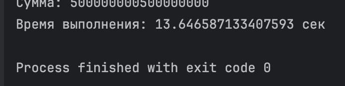
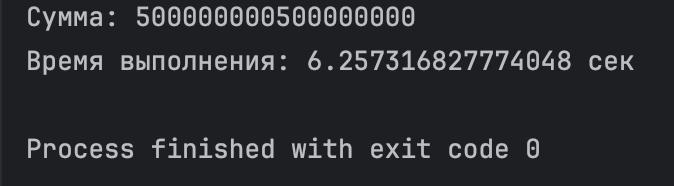
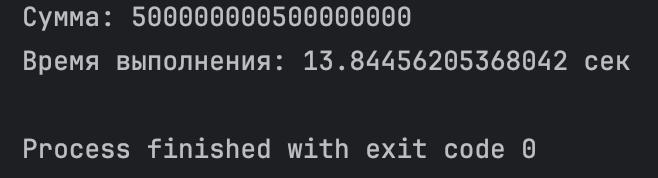

Результаты
- Threading
import threading
import time
def part_sum(start, end, result, index):
result[index] = sum(range(start, end))
def calculate_sum_threading(n, num_threads):
step = n // num_threads
threads = []
result = [0] * num_threads
for i in range(num_threads):
start = i * step + 1
end = n + 1 if i == num_threads - 1 else (i + 1) * step + 1
t = threading.Thread(target=part_sum, args=(start, end, result, i))
threads.append(t)
t.start()
for t in threads:
t.join()
return sum(result)
if __name__ == "__main__":
n = 10 ** 9
start_time = time.time()
total = calculate_sum_threading(n, 5)
print("Сумма:", total)
print("Время выполнения:", time.time() - start_time, "сек")

- Multiprocessing
from multiprocessing import Pool
import time
def part_sum(args):
start, end = args
return sum(range(start, end))
def calculate_sum_multiprocessing(n, num_processes):
step = n // num_processes
ranges = [(i * step + 1, n + 1 if i == num_processes - 1 else (i + 1) * step + 1) for i in range(num_processes)]
with Pool(processes=num_processes) as pool:
results = pool.map(part_sum, ranges)
return sum(results)
if __name__ == "__main__":
n = 10 ** 9
start_time = time.time()
total = calculate_sum_multiprocessing(n, 5)
print("Сумма:", total)
print("Время выполнения:", time.time() - start_time, "сек")

- Async
import asyncio
import time
async def partial_sum(start, end):
return sum(range(start, end))
async def calculate_sum(n, num_tasks):
step = n // num_tasks
tasks = []
for i in range(num_tasks):
start = i * step + 1
end = n + 1 if i == num_tasks - 1 else (i + 1) * step + 1
tasks.append(asyncio.create_task(partial_sum(start, end)))
results = await asyncio.gather(*tasks)
return sum(results)
if __name__ == "__main__":
n = 10 ** 9
start_time = time.time()
result = asyncio.run(calculate_sum(n, 5))
print("Сумма:", result)
print("Время выполнения:", time.time() - start_time, "сек")

Вывод:
Наиболее эффективным для ЦПУ задач является мультипроцессинг.